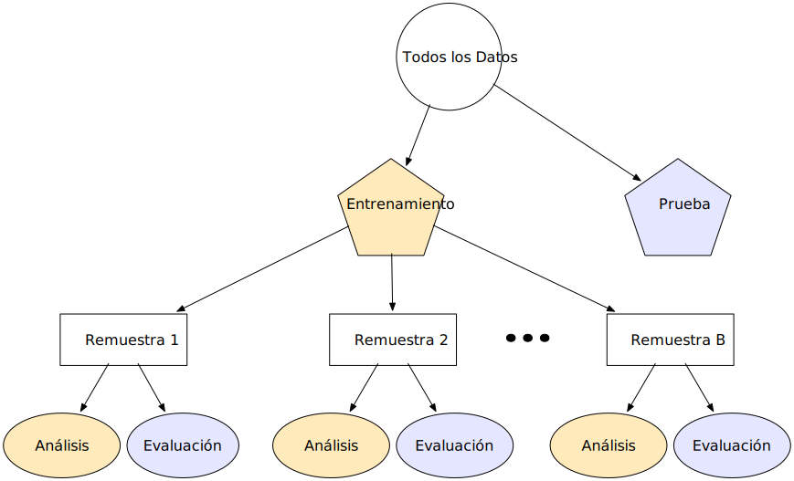
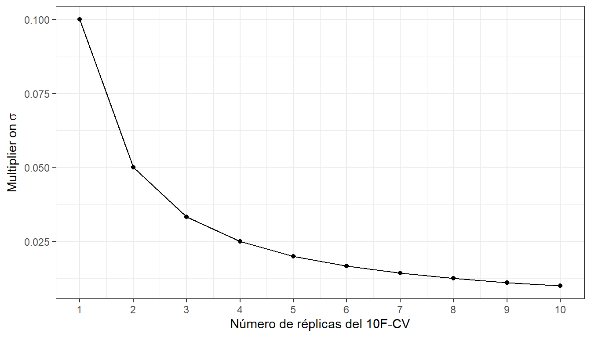
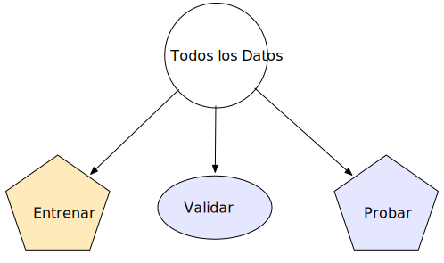
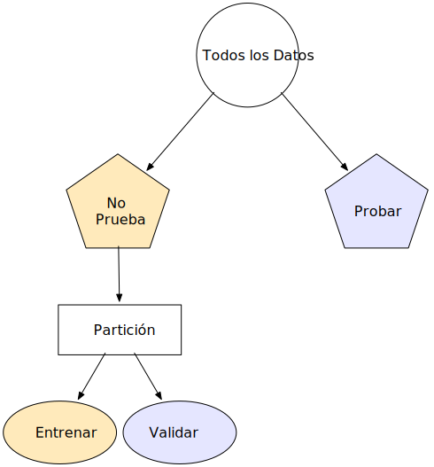
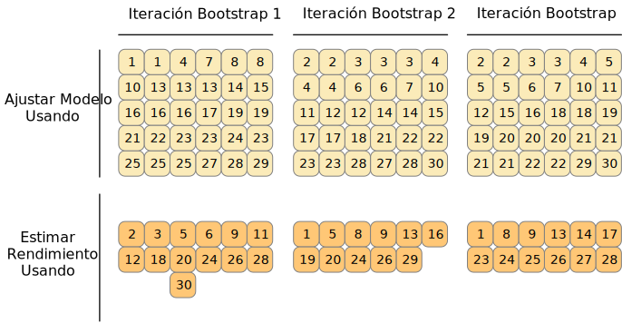
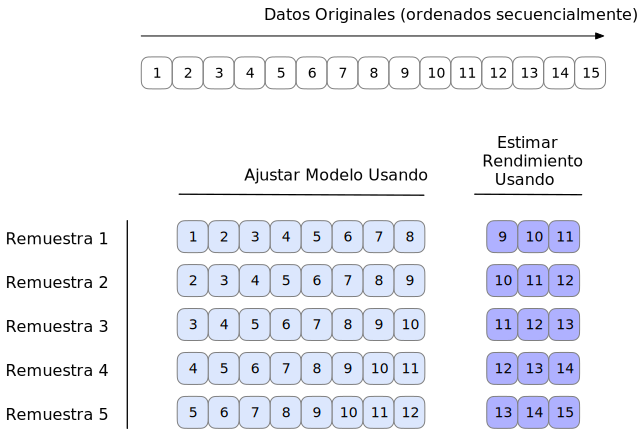
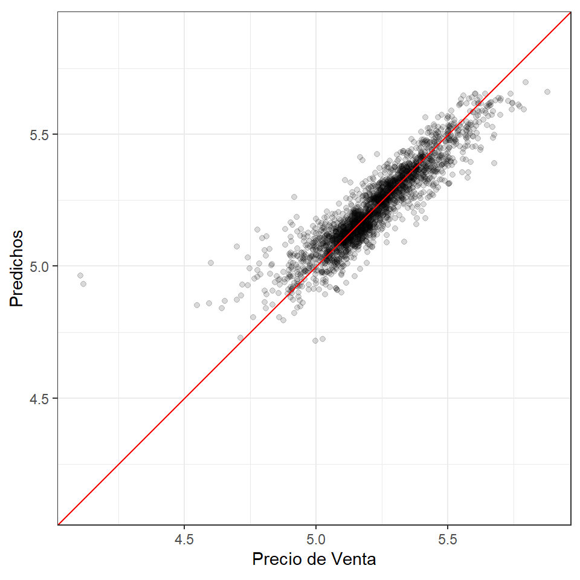

rf_model <-
rand_forest(trees = 1000) %>%
set_engine("ranger") %>%
set_mode("regression")
rf_wflow <-
workflow() %>%
add_formula(
Sale_Price ~ Neighborhood + Gr_Liv_Area + Year_Built + Bldg_Type +
Latitude + Longitude) %>%
add_model(rf_model)
rf_fit <- rf_wflow %>% fit(data = ames_train)10 Remuestrear Para Evaluar El Rendimiento
Ya hemos cubierto varias piezas que se deben juntar para evaluar el desempeño de un modelo. El Capítulo sec-performance describió estadísticas para medir el rendimiento del modelo. El Capítulo sec-splitting introdujo la idea del gasto de datos y recomendamos el conjunto de pruebas para obtener una estimación imparcial del rendimiento. Sin embargo, normalmente necesitamos comprender el rendimiento de un modelo o incluso de varios modelos antes de utilizar el conjunto de prueba.
Normalmente no podemos decidir qué modelo final usar con el conjunto de pruebas antes de evaluar primero el rendimiento del modelo. Existe una brecha entre nuestra necesidad de medir el desempeño de manera confiable y las divisiones de datos (capacitación y pruebas) que tenemos disponibles.
En este capítulo, describimos un enfoque llamado remuestreo que puede llenar este vacío. Las estimaciones de rendimiento remuestreadas pueden generalizarse a nuevos datos de manera similar a las estimaciones de un conjunto de pruebas. El próximo capítulo complementa éste demostrando métodos estadísticos que comparan los resultados del remuestreo.
Para apreciar plenamente el valor del remuestreo, primero echemos un vistazo al enfoque de resustitución, que a menudo puede fallar.
10.1 El Enfoque De La Resustitución
Cuando medimos el rendimiento con los mismos datos que utilizamos para el entrenamiento (a diferencia de datos nuevos o datos de prueba), decimos que hemos resustituido los datos. Utilicemos nuevamente los datos de vivienda de Ames para demostrar estos conceptos. sec-recipes-summary resume el estado actual de nuestro análisis de Ames. Incluye un objeto de receta llamado ames_rec, un modelo lineal y un flujo de trabajo que usa esa receta y modelo llamado lm_wflow. Este flujo de trabajo se ajustó al conjunto de entrenamiento, lo que dio como resultado lm_fit.
Para comparar con este modelo lineal, también podemos ajustar un tipo diferente de modelo. Los random forest son un método de conjunto de árboles que opera creando una gran cantidad de árboles de decisión a partir de versiones ligeramente diferentes del conjunto de entrenamiento (Breiman 2001). Esta colección de árboles conforma el conjunto. Al predecir una nueva muestra, cada miembro del conjunto realiza una predicción por separado. Estos se promedian para crear la predicción conjunta final para el nuevo punto de datos.
Los modelos de random forest son muy potentes y pueden emular muy fielmente los patrones de datos subyacentes. Si bien este modelo puede requerir un uso intensivo de computación, requiere muy poco mantenimiento; se requiere muy poco preprocesamiento (como se documenta en Apéndice sec-pre-proc-table).
Usando el mismo conjunto de predictores que el modelo lineal (sin los pasos de preprocesamiento adicionales), podemos ajustar un modelo de random forest al conjunto de entrenamiento a través del motor "ranger" (que usa el paquete R ranger para cálculo). Este modelo no requiere procesamiento previo, por lo que se puede utilizar una fórmula simple:
¿Cómo deberíamos comparar los modelos forestales lineales y aleatorios? A modo de demostración, predeciremos que el conjunto de entrenamiento producirá lo que se conoce como métrica aparente o métrica de resustitución. Esta función crea predicciones y formatea los resultados:
estimate_perf <- function(model, dat) {
# Captura los nombres de los objetos `model` y `dat`
cl <- match.call()
obj_name <- as.character(cl$model)
data_name <- as.character(cl$dat)
data_name <- gsub("ames_", "", data_name)
# Estima estas metricas
reg_metrics <- metric_set(rmse, rsq)
model %>%
predict(dat) %>%
bind_cols(dat %>% select(Sale_Price)) %>%
reg_metrics(Sale_Price, .pred) %>%
select(-.estimator) %>%
mutate(object = obj_name, data = data_name)
}Se calculan tanto RMSE como \(R^2\). Las estadísticas de resustitución son:
estimate_perf(rf_fit, ames_train)
## # A tibble: 2 × 4
## .metric .estimate object data
## <chr> <dbl> <chr> <chr>
## 1 rmse 0.0366 rf_fit train
## 2 rsq 0.960 rf_fit train
estimate_perf(lm_fit, ames_train)
## # A tibble: 2 × 4
## .metric .estimate object data
## <chr> <dbl> <chr> <chr>
## 1 rmse 0.0754 lm_fit train
## 2 rsq 0.816 lm_fit trainEn base a estos resultados, el random forest es mucho más capaz de predecir los precios de venta; la estimación de RMSE es two, veces mejor que la regresión lineal. Si tuviéramos que elegir entre estos dos modelos para este problema de predicción de precios, probablemente elegiríamos el random fores porque, en la escala logarítmica que estamos usando, su RMSE es aproximadamente la mitad. El siguiente paso aplica el modelo de random forest al conjunto de prueba para la verificación final:
estimate_perf(rf_fit, ames_test)
## # A tibble: 2 × 4
## .metric .estimate object data
## <chr> <dbl> <chr> <chr>
## 1 rmse 0.0704 rf_fit test
## 2 rsq 0.852 rf_fit test¡La estimación RMSE del conjunto de prueba, 0.0704, es much worse than the training set valor de 0.0366! ¿Por qué pasó esto?
Muchos modelos predictivos son capaces de aprender tendencias complejas a partir de los datos. En estadística, estos se conocen comúnmente como modelos de bajo sesgo.
En este contexto, sesgo es la diferencia entre el patrón o las relaciones verdaderas en los datos y los tipos de patrones que el modelo puede emular. Muchos modelos de aprendizaje automático de caja negra tienen un sesgo bajo, lo que significa que pueden reproducir relaciones complejas. Otros modelos (como la regresión lineal/logística, el análisis discriminante y otros) no son tan adaptables y se consideran modelos de alto sesgo.1
Para un modelo de bajo sesgo, el alto grado de capacidad predictiva a veces puede hacer que el modelo casi memorice los datos del conjunto de entrenamiento. Como ejemplo obvio, considere un modelo de 1 vecino más cercano. Siempre proporcionará predicciones perfectas para el conjunto de entrenamiento, sin importar qué tan bien funcione para otros conjuntos de datos. Los modelos de random forest son similares; Repredecir el conjunto de entrenamiento siempre dará como resultado una estimación artificialmente optimista del rendimiento.
Para ambos modelos, Tabla tbl-rmse-results resume la estimación de RMSE para los conjuntos de entrenamiento y prueba:
| object | train | test |
|---|---|---|
lm_fit |
0.0754 | 0.0736 |
rf_fit |
0.0366 | 0.0704 |
Observe que el modelo de regresión lineal es consistente entre el entrenamiento y las pruebas, debido a su complejidad limitada.2
La principal conclusión de este ejemplo es que repredecir el conjunto de entrenamiento dará como resultado una estimación del rendimiento artificialmente optimista. Es una mala idea para la mayoría de los modelos.
Si el conjunto de prueba no se debe utilizar de inmediato y repredecir el conjunto de entrenamiento es una mala idea, ¿qué se debe hacer? Los métodos de remuestreo, como la validación cruzada o los conjuntos de validación, son la solución.
10.2 Métodos De Remuestreo
Los métodos de remuestreo son sistemas de simulación empíricos que emulan el proceso de utilizar algunos datos para modelar y diferentes datos para evaluación. La mayoría de los métodos de remuestreo son iterativos, lo que significa que este proceso se repite varias veces. El diagrama en Figura fig-resampling-scheme ilustra cómo funcionan generalmente los métodos de remuestreo.

El remuestreo se realiza solo en el conjunto de entrenamiento, como se ve en Figura fig-resampling-scheme. El equipo de prueba no está involucrado. Para cada iteración de remuestreo, los datos se dividen en dos submuestras:
El modelo se ajusta a la conjunto de análisis.
El modelo se evalúa con el conjunto de evaluación.
Estas dos submuestras son algo análogas a los conjuntos de entrenamiento y prueba. Nuestro lenguaje de análisis y evaluación evita confusiones con la división inicial de los datos. Estos conjuntos de datos son mutuamente excluyentes. El esquema de partición utilizado para crear los conjuntos de análisis y evaluación suele ser la característica definitoria del método.
Supongamos que se realizan 20 iteraciones de remuestreo. Esto significa que se ajustan 20 modelos separados a los conjuntos de análisis y los conjuntos de evaluación correspondientes producen 20 conjuntos de estadísticas de desempeño. La estimación final del rendimiento de un modelo es el promedio de las 20 réplicas de las estadísticas. Este promedio tiene muy buenas propiedades de generalización y es mucho mejor que las estimaciones de resustitución.
La siguiente sección define varios métodos de remuestreo comúnmente utilizados y analiza sus ventajas y desventajas.
10.2.1 Validación cruzada
La validación cruzada es un método de remuestreo bien establecido. Si bien existen varias variaciones, el método de validación cruzada más común es la validación cruzada V. Los datos se dividen aleatoriamente en V conjuntos de tamaño aproximadamente igual (llamados pliegues). A modo de ilustración, V = 3 se muestra en Figura fig-cross-validation-allocation para un conjunto de datos de 30 puntos de configuración de entrenamiento con asignaciones de pliegues aleatorios. El número dentro de los símbolos es el número de muestra.

El color de los símbolos en Figura fig-cross-validation-allocation representa sus pliegues asignados aleatoriamente. El muestreo estratificado también es una opción para asignar pliegues (analizado anteriormente en sec-splitting-methods).
Para una validación cruzada triple, las tres iteraciones de remuestreo se ilustran en Figura fig-cross-validation. Para cada iteración, se reserva un pliegue para las estadísticas de evaluación y los pliegues restantes son sustrato para el modelo. Este proceso continúa en cada pliegue, de modo que tres modelos producen tres conjuntos de estadísticas de rendimiento.

Cuando V = 3, los conjuntos de análisis son 2/3 del conjunto de entrenamiento y cada conjunto de evaluación es un 1/3 distinto. La estimación final del remuestreo del rendimiento promedia cada una de las V réplicas.
Usar V = 3 es una buena opción para ilustrar la validación cruzada, pero en la práctica es una mala opción porque es demasiado baja para generar estimaciones confiables. En la práctica, los valores de V suelen ser 5 o 10; Generalmente preferimos la validación cruzada 10 veces como valor predeterminado porque es lo suficientemente grande para obtener buenos resultados en la mayoría de las situaciones.
¿Cuáles son los efectos de cambiar V? Los valores más grandes dan como resultado estimaciones de remuestreo con un sesgo pequeño pero una varianza sustancial. Los valores más pequeños de V tienen un sesgo grande pero una varianza baja. Preferimos 10 veces, ya que la replicación reduce el ruido, pero no el sesgo.3
La entrada principal es el marco de datos del conjunto de entrenamiento, así como el número de pliegues (por defecto, 10):
set.seed(1001)
ames_folds <- vfold_cv(ames_train, v = 10)
ames_folds
## # 10-fold cross-validation
## # A tibble: 10 × 2
## splits id
## <list> <chr>
## 1 <split [2107/235]> Fold01
## 2 <split [2107/235]> Fold02
## 3 <split [2108/234]> Fold03
## 4 <split [2108/234]> Fold04
## 5 <split [2108/234]> Fold05
## 6 <split [2108/234]> Fold06
## # ℹ 4 more rowsLa columna denominada splits contiene información sobre cómo dividir los datos (similar al objeto utilizado para crear la partición de entrenamiento/prueba inicial). Si bien cada fila de “divisiones” tiene una copia incrustada de todo el conjunto de entrenamiento, R es lo suficientemente inteligente como para no hacer copias de los datos en la memoria.4 El método de impresión dentro del tibble muestra la frecuencia de cada: [2107/235] indica que alrededor de dos mil muestras están en el conjunto de análisis y 235 están en ese conjunto de evaluación en particular.
Estos objetos también contienen siempre una columna de caracteres llamada id que etiqueta la partición.5
Para recuperar manualmente los datos particionados, las funciones analysis() y assessment() devuelven los marcos de datos correspondientes:
# Para el primer pliegue:
ames_folds$splits[[1]] %>% analysis() %>% dim()
## [1] 2107 74Los paquetes tidymodels, como tune, contienen interfaces de usuario de alto nivel para que funciones como analysis() no sean generalmente necesarias para el trabajo diario. sec-resampling-performance demuestra una función para ajustar un modelo sobre estos remuestreos.
Existe una variedad de variaciones de validación cruzada; repasaremos los más importantes.
Validación cruzada repetida
La variación más importante de la validación cruzada es la validación cruzada repetida V veces. Dependiendo del tamaño de los datos u otras características, la estimación de remuestreo producida por la validación cruzada V veces puede ser excesivamente ruidosa.6 Como ocurre con muchos problemas estadísticos, una forma de reducir el ruido es recopilar más datos . Para la validación cruzada, esto significa promediar más de V estadísticas.
Para crear repeticiones R de validación cruzada de pliegues V, se realiza el mismo proceso de generación de pliegues R veces para generar colecciones R de particiones V. Ahora, en lugar de promediar las estadísticas V, las estadísticas \(V \times R\) producen la estimación final del remuestreo. Debido al teorema del límite central, las estadísticas resumidas de cada modelo tienden a una distribución normal, siempre que tengamos muchos datos relativos a \(V \times R\).
Consideremos los datos de Ames. En promedio, la validación cruzada 10 veces utiliza conjuntos de evaluación que contienen aproximadamente propiedades 234. Si RMSE es la estadística elegida, podemos denotar la desviación estándar de esa estimación como \(\sigma\). Con una validación cruzada simple de 10 veces, el error estándar del RMSE medio es \(\sigma/\sqrt{10}\). Si esto es demasiado ruidoso, las repeticiones reducen el error estándar a \(\sigma/\sqrt{10R}\). Para una validación cruzada de 10 veces con réplicas de \(R\), el gráfico en Figura fig-variance-reduction muestra qué tan rápido disminuye el error estándar7 con las réplicas.

Un mayor número de réplicas tiende a tener menos impacto en el error estándar. Sin embargo, si el valor de referencia de \(\sigma\) es imprácticamente grande, los rendimientos decrecientes de la replicación aún pueden valer los costos computacionales adicionales.
Para crear repeticiones, invoque vfold_cv() con un argumento adicional repeats:
vfold_cv(ames_train, v = 10, repeats = 5)
## # 10-fold cross-validation repeated 5 times
## # A tibble: 50 × 3
## splits id id2
## <list> <chr> <chr>
## 1 <split [2107/235]> Repeat1 Fold01
## 2 <split [2107/235]> Repeat1 Fold02
## 3 <split [2108/234]> Repeat1 Fold03
## 4 <split [2108/234]> Repeat1 Fold04
## 5 <split [2108/234]> Repeat1 Fold05
## 6 <split [2108/234]> Repeat1 Fold06
## # ℹ 44 more rowsValidación cruzada de dejar uno fuera
Una variación de la validación cruzada es la validación cruzada de dejar uno fuera (LOO). Si hay \(n\) muestras de conjuntos de entrenamiento, \(n\) modelos se ajustan usando \(n-1\) filas del conjunto de entrenamiento. Cada modelo predice el único punto de datos excluido. Al final del remuestreo, las predicciones \(n\) se combinan para producir una única estadística de rendimiento.
Los métodos de dejar uno fuera son deficientes en comparación con casi cualquier otro método. Para cualquier cosa que no sea una muestra patológicamente pequeña, LOO es computacionalmente excesivo y puede que no tenga buenas propiedades estadísticas. Aunque el paquete rsample contiene una función loo_cv(), estos objetos generalmente no están integrados en los marcos más amplios de tidymodels.
Validación cruzada de Monte Carlo
Otra variante de la validación cruzada V es la validación cruzada de Monte Carlo (MCCV, Xu y Liang (2001)). Al igual que la validación cruzada V veces, asigna una proporción fija de datos a los conjuntos de evaluación. La diferencia entre MCCV y la validación cruzada regular es que, para MCCV, esta proporción de datos se selecciona aleatoriamente cada vez. Esto da como resultado conjuntos de evaluación que no son mutuamente excluyentes. Para crear estos objetos de remuestreo:
mc_cv(ames_train, prop = 9/10, times = 20)
## # Monte Carlo cross-validation (0.9/0.1) with 20 resamples
## # A tibble: 20 × 2
## splits id
## <list> <chr>
## 1 <split [2107/235]> Resample01
## 2 <split [2107/235]> Resample02
## 3 <split [2107/235]> Resample03
## 4 <split [2107/235]> Resample04
## 5 <split [2107/235]> Resample05
## 6 <split [2107/235]> Resample06
## # ℹ 14 more rows10.2.2 Conjuntos de validación
En sec-what-about-a-validation-set, analizamos brevemente el uso de un conjunto de validación, una única partición que se reserva para estimar el rendimiento separada del conjunto de prueba. Cuando se utiliza un conjunto de validación, el conjunto de datos inicial disponible se divide en un conjunto de entrenamiento, un conjunto de validación y un conjunto de prueba (consulte Figura fig-three-way-split).

Los conjuntos de validación se utilizan a menudo cuando el conjunto de datos original es muy grande. En este caso, una única partición grande puede ser adecuada para caracterizar el rendimiento del modelo sin tener que realizar múltiples iteraciones de remuestreo.
Con el paquete rsample, un conjunto de validación es como cualquier otro objeto de remuestreo; este tipo se diferencia únicamente en que tiene una única iteración.8 Figura fig-validation-split muestra este esquema.

Para construir sobre el código de sec-what-about-a-validation-set, la función validation_set() puede tomar los resultados de initial_validation_split() y convertirlos en un objeto rset similar a los producidos. mediante funciones como vfold_cv():
# Previamente:
set.seed(52)
# Para dedicar el 60 % al entrenamiento, el 20 % a la validación y el 20 % a las pruebas:
ames_val_split <- initial_validation_split(ames, prop = c(0.6, 0.2))
ames_val_split
## <Training/Validation/Testing/Total>
## <1758/586/586/2930>
# Objeto utilizado para remuestreo:
val_set <- validation_set(ames_val_split)
val_set
## # A tibble: 1 × 2
## splits id
## <list> <chr>
## 1 <split [1758/586]> validationComo verá en sec-resampling-rendimiento, la función fit_resamples() se utilizará para calcular estimaciones correctas de rendimiento mediante el remuestreo. El objeto val_set se puede utilizar en esta y otras funciones aunque sea una única “muestra” de los datos.
10.2.3 Bootstrapping
El remuestreo Bootstrap se inventó originalmente como un método para aproximar la distribución muestral de estadísticas cuyas propiedades teóricas son intratables (Davison y Hinkley 1997). Usarlo para estimar el desempeño del modelo es una aplicación secundaria del método.
Una muestra bootstrap del conjunto de entrenamiento es una muestra que tiene el mismo tamaño que el conjunto de entrenamiento pero que se extrae con reemplazo. Esto significa que algunos puntos de datos del conjunto de entrenamiento se seleccionan varias veces para el conjunto de análisis. Cada punto de datos tiene una probabilidad 63.2% de ser incluido en el conjunto de entrenamiento al menos una vez. El conjunto de evaluación contiene todas las muestras del conjunto de entrenamiento que no fueron seleccionadas para el conjunto de análisis (en promedio, con 36.8% del conjunto de entrenamiento). Al realizar el arranque, el conjunto de evaluación a menudo se denomina muestra fuera de la bolsa.
Para un conjunto de entrenamiento de 30 muestras, en la siguiente figura se muestra un esquema de tres muestras bootstrap Figura fig-bootstrapping.

Tenga en cuenta que los tamaños de los conjuntos de evaluación varían.
Usando el paquete rsample, podemos crear tales remuestreos de bootstrap:
bootstraps(ames_train, times = 5)
## # Bootstrap sampling
## # A tibble: 5 × 2
## splits id
## <list> <chr>
## 1 <split [2342/867]> Bootstrap1
## 2 <split [2342/869]> Bootstrap2
## 3 <split [2342/859]> Bootstrap3
## 4 <split [2342/858]> Bootstrap4
## 5 <split [2342/873]> Bootstrap5Las muestras Bootstrap producen estimaciones de rendimiento que tienen una varianza muy baja (a diferencia de la validación cruzada) pero tienen un sesgo pesimista significativo. Esto significa que, si la precisión real de un modelo es del 90%, el bootstrap tendería a estimar que el valor es inferior al 90%. La cantidad de sesgo no se puede determinar empíricamente con suficiente precisión. Además, la cantidad de sesgo cambia a lo largo de la escala de la métrica de desempeño. Por ejemplo, es probable que el sesgo sea diferente cuando la precisión es del 90 % y cuando es del 70 %.
El bootstrap también se utiliza en muchos modelos. Por ejemplo, el modelo de random forest mencionado anteriormente contenía 1000 árboles de decisión individuales. Cada árbol fue producto de una muestra de bootstrap diferente del conjunto de entrenamiento.
10.2.4 Remuestreo continuo del origen de la previsión
Cuando los datos tienen un fuerte componente temporal, un método de remuestreo debería respaldar el modelado para estimar tendencias estacionales y otras tendencias temporales dentro de los datos. Una técnica que muestrea aleatoriamente valores del conjunto de entrenamiento puede alterar la capacidad del modelo para estimar estos patrones.
El remuestreo continuo del origen del pronóstico (Hyndman y Athanasopoulos 2018) proporciona un método que emula cómo los datos de series de tiempo a menudo se dividen en la práctica, estimando el modelo con datos históricos y evaluándolo con los datos más recientes. Para este tipo de remuestreo, se especifica el tamaño de los conjuntos de análisis y evaluación iniciales. La primera iteración de remuestreo utiliza estos tamaños, comenzando desde el principio de la serie. La segunda iteración utiliza los mismos tamaños de datos pero cambia en un número determinado de muestras.
A modo de ilustración, se volvió a muestrear un conjunto de entrenamiento de quince muestras con un tamaño de análisis de ocho muestras y un tamaño de conjunto de evaluación de tres. La segunda iteración descarta la primera muestra del conjunto de entrenamiento y ambos conjuntos de datos avanzan uno. Esta configuración da como resultado cinco remuestreos, como se muestra en Figura fig-rolling.

Aquí hay dos configuraciones diferentes de este método:
El conjunto de análisis puede crecer acumulativamente (en lugar de permanecer del mismo tamaño). Después del primer conjunto de análisis inicial, se pueden acumular nuevas muestras sin descartar los datos anteriores.
Los remuestreos no necesitan incrementarse en uno. Por ejemplo, para conjuntos de datos grandes, el bloque incremental podría ser una semana o un mes en lugar de un día.
Para los datos de un año, supongamos que seis conjuntos de bloques de 30 días definen el conjunto de análisis. Para conjuntos de evaluación de 30 días con un salto de 29 días, podemos usar el paquete rsample para especificar:
time_slices <-
tibble(x = 1:365) %>%
rolling_origin(initial = 6 * 30, assess = 30, skip = 29, cumulative = FALSE)
data_range <- function(x) {
summarize(x, first = min(x), last = max(x))
}
map_dfr(time_slices$splits, ~ analysis(.x) %>% data_range())
## # A tibble: 6 × 2
## first last
## <int> <int>
## 1 1 180
## 2 31 210
## 3 61 240
## 4 91 270
## 5 121 300
## 6 151 330
map_dfr(time_slices$splits, ~ assessment(.x) %>% data_range())
## # A tibble: 6 × 2
## first last
## <int> <int>
## 1 181 210
## 2 211 240
## 3 241 270
## 4 271 300
## 5 301 330
## 6 331 36010.3 Estimación Del Rendimiento
Cualquiera de los métodos de remuestreo discutidos en este capítulo se puede utilizar para evaluar el proceso de modelado (incluido el preprocesamiento, el ajuste del modelo, etc.). Estos métodos son eficaces porque se utilizan diferentes grupos de datos para entrenar el modelo y evaluarlo. Para reiterar, el proceso para utilizar el remuestreo es:
Durante el remuestreo, el conjunto de análisis se utiliza para preprocesar los datos, aplicar el preprocesamiento a sí mismo y utilizar estos datos procesados para ajustarse al modelo.
Las estadísticas de preprocesamiento producidas por el conjunto de análisis se aplican al conjunto de evaluación. Las predicciones del conjunto de evaluación estiman el rendimiento con datos nuevos.
Esta secuencia se repite para cada nuevo muestreo. Si hay B remuestreos, hay B réplicas de cada una de las métricas de rendimiento. La estimación final del remuestreo es el promedio de estas estadísticas B. Si B = 1, como ocurre con un conjunto de validación, las estadísticas individuales representan el rendimiento general.
Reconsideremos el modelo de random forest anterior contenido en el objeto rf_wflow. La función fit_resamples() es análoga a fit(), pero en lugar de tener un argumento data, fit_resamples() tiene resamples, que espera un objeto rset como los que se muestran en este capítulo Las posibles interfaces para la función son:
model_spec %>% fit_resamples(formula, resamples, ...)
model_spec %>% fit_resamples(recipe, resamples, ...)
workflow %>% fit_resamples( resamples, ...)Hay una serie de otros argumentos opcionales, como por ejemplo:
metrics: Un conjunto de métricas de estadísticas de rendimiento para calcular. De forma predeterminada, los modelos de regresión utilizan RMSE y \(R^2\), mientras que los modelos de clasificación calculan el área bajo la curva ROC y la precisión general. Tenga en cuenta que esta elección también define qué predicciones se producen durante la evaluación del modelo. Para la clasificación, si solo se solicita precisión, no se generan estimaciones de probabilidad de clase para el conjunto de evaluación (ya que no son necesarias).control: Una lista creada porcontrol_resamples()con varias opciones.
Los argumentos de control incluyen:
verbose: Una lógica para imprimir el registro.extract: Una función para retener objetos de cada iteración del modelo (que se analiza más adelante en este capítulo).save_pred: Una lógica para guardar las predicciones del conjunto de evaluación.
Para nuestro ejemplo, guardemos las predicciones para visualizar el ajuste y los residuos del modelo:
keep_pred <- control_resamples(save_pred = TRUE, save_workflow = TRUE)
set.seed(1003)
rf_res <-
rf_wflow %>%
fit_resamples(resamples = ames_folds, control = keep_pred)
rf_res
## # Resampling results
## # 10-fold cross-validation
## # A tibble: 10 × 5
## splits id .metrics .notes .predictions
## <list> <chr> <list> <list> <list>
## 1 <split [2107/235]> Fold01 <tibble [2 × 4]> <tibble [0 × 3]> <tibble [235 × 4]>
## 2 <split [2107/235]> Fold02 <tibble [2 × 4]> <tibble [0 × 3]> <tibble [235 × 4]>
## 3 <split [2108/234]> Fold03 <tibble [2 × 4]> <tibble [0 × 3]> <tibble [234 × 4]>
## 4 <split [2108/234]> Fold04 <tibble [2 × 4]> <tibble [0 × 3]> <tibble [234 × 4]>
## 5 <split [2108/234]> Fold05 <tibble [2 × 4]> <tibble [0 × 3]> <tibble [234 × 4]>
## 6 <split [2108/234]> Fold06 <tibble [2 × 4]> <tibble [0 × 3]> <tibble [234 × 4]>
## # ℹ 4 more rowsEl valor de retorno es un tibble similar a las muestras de entrada, junto con algunas columnas adicionales:
.metricses una columna de lista de tibbles que contiene las estadísticas de rendimiento del conjunto de evaluación..notesHay otra columna de lista de tibbles que cataloga cualquier advertencia o error generado durante el remuestreo. Tenga en cuenta que los errores no detendrán la ejecución posterior del remuestreo..predictionsestá presente cuandosave_pred = TRUE. Esta columna de lista contiene tibbles con predicciones fuera de muestra.
Si bien estas columnas de lista pueden parecer desalentadoras, se pueden reconfigurar fácilmente usando tidyr o con las funciones convenientes que proporciona tidymodels. Por ejemplo, para devolver las métricas de rendimiento en un formato más utilizable:
collect_metrics(rf_res)
## # A tibble: 2 × 6
## .metric .estimator mean n std_err .config
## <chr> <chr> <dbl> <int> <dbl> <chr>
## 1 rmse standard 0.0721 10 0.00305 Preprocessor1_Model1
## 2 rsq standard 0.831 10 0.0108 Preprocessor1_Model1Estas son las estimaciones de remuestreo promediadas sobre las réplicas individuales. Para obtener las métricas para cada remuestreo, use la opción summarize = FALSE.
¡Observe cuánto más realistas son las estimaciones de rendimiento que las estimaciones de resustitución de sec-resampling-resubstition!
Para obtener las predicciones del conjunto de evaluación:
assess_res <- collect_predictions(rf_res)
assess_res
## # A tibble: 2,342 × 5
## id .pred .row Sale_Price .config
## <chr> <dbl> <int> <dbl> <chr>
## 1 Fold01 5.10 10 5.09 Preprocessor1_Model1
## 2 Fold01 4.92 27 4.90 Preprocessor1_Model1
## 3 Fold01 5.21 47 5.08 Preprocessor1_Model1
## 4 Fold01 5.13 52 5.10 Preprocessor1_Model1
## 5 Fold01 5.13 59 5.10 Preprocessor1_Model1
## 6 Fold01 5.13 63 5.11 Preprocessor1_Model1
## # ℹ 2,336 more rowsLos nombres de las columnas de predicción siguen las convenciones analizadas para los modelos parsnip en el Capítulo sec-models, para mayor coherencia y facilidad de uso. La columna de resultados observados siempre utiliza el nombre de la columna original de los datos de origen. La columna .row es un número entero que coincide con la fila del conjunto de entrenamiento original para que estos resultados puedan organizarse y unirse adecuadamente con los datos originales.
Para algunos métodos de remuestreo, como el bootstrap o la validación cruzada repetida, habrá múltiples predicciones por fila del conjunto de entrenamiento original. Para obtener valores resumidos (promedios de las predicciones replicadas), utilice collect_predictions(object, summarize = TRUE).
Dado que este análisis utilizó una validación cruzada de 10 veces, existe una predicción única para cada muestra del conjunto de entrenamiento. Estos datos pueden generar gráficos útiles del modelo para comprender dónde potencialmente falló. Por ejemplo, Figura fig-ames-resampled-dance compara los valores observados y predichos retenidos (análogo a Figura fig-ames-rendimiento-plot):
assess_res %>%
ggplot(aes(x = Sale_Price, y = .pred)) +
geom_point(alpha = .15) +
geom_abline(color = "red") +
coord_obs_pred() +
ylab("Predichos") +
xlab("Precio de Venta")
Hay dos casas en el conjunto de entrenamiento con un precio de venta bajo observado que el modelo sobreestima significativamente. ¿Qué casas son estas? Averigüemos por el resultado de assess_res:
over_predicted <-
assess_res %>%
mutate(residual = Sale_Price - .pred) %>%
arrange(desc(abs(residual))) %>%
slice(1:2)
over_predicted
## # A tibble: 2 × 6
## id .pred .row Sale_Price .config residual
## <chr> <dbl> <int> <dbl> <chr> <dbl>
## 1 Fold09 4.96 32 4.11 Preprocessor1_Model1 -0.858
## 2 Fold08 4.93 317 4.12 Preprocessor1_Model1 -0.816
ames_train %>%
slice(over_predicted$.row) %>%
select(Gr_Liv_Area, Neighborhood, Year_Built, Bedroom_AbvGr, Full_Bath)
## # A tibble: 2 × 5
## Gr_Liv_Area Neighborhood Year_Built Bedroom_AbvGr Full_Bath
## <int> <fct> <int> <int> <int>
## 1 832 Old_Town 1923 2 1
## 2 733 Iowa_DOT_and_Rail_Road 1952 2 1Identificar ejemplos como estos con un desempeño especialmente pobre puede ayudarnos a realizar un seguimiento e investigar por qué estas predicciones específicas son tan pobres.
Volvamos a las casas en general. ¿Cómo podemos utilizar un conjunto de validación en lugar de validación cruzada? De nuestro objeto anterior rsample:
val_res <- rf_wflow %>% fit_resamples(resamples = val_set)
## Warning in `[.tbl_df`(x, is.finite(x <- as.numeric(x))): NAs introducidos por
## coerción
val_res
## # Resampling results
## #
## # A tibble: 1 × 4
## splits id .metrics .notes
## <list> <chr> <list> <list>
## 1 <split [1758/586]> validation <tibble [2 × 4]> <tibble [0 × 3]>
collect_metrics(val_res)
## # A tibble: 2 × 6
## .metric .estimator mean n std_err .config
## <chr> <chr> <dbl> <int> <dbl> <chr>
## 1 rmse standard 0.0727 1 NA Preprocessor1_Model1
## 2 rsq standard 0.823 1 NA Preprocessor1_Model1Estos resultados también están mucho más cerca de los resultados del conjunto de pruebas que las estimaciones de rendimiento de resustitución.
En estos análisis, los resultados del remuestreo son muy cercanos a los resultados del conjunto de pruebas. Los dos tipos de estimaciones tienden a estar bien correlacionados. Sin embargo, esto podría deberse al azar. Un valor inicial de “55” fijó los números aleatorios antes de crear las nuevas muestras. Intente cambiar este valor y vuelva a ejecutar los análisis para investigar si las estimaciones remuestreadas también coinciden con los resultados del conjunto de pruebas.
10.4 Procesamiento En Paralelo
Los modelos creados durante el remuestreo son independientes entre sí. Los cálculos de este tipo a veces se denominan vergonzosamente paralelos; cada modelo podría adaptarse simultáneamente sin problemas.9 El paquete tune usa foreach paquete para facilitar los cálculos paralelos. Estos cálculos podrían dividirse entre procesadores de la misma computadora o entre computadoras diferentes, según la tecnología elegida.
Para cálculos realizados en una sola computadora, el número de procesos de trabajo posibles está determinado por el paquete parallel:
# La cantidad de núcleos físicos en el hardware:
parallel::detectCores(logical = FALSE)
## [1] 2
# El número de posibles procesadors independientes que pueden
# ser utilizados simultáneamente:
parallel::detectCores(logical = TRUE)
## [1] 4La diferencia entre estos dos valores está relacionada con el procesador de la computadora. Por ejemplo, la mayoría de los procesadores Intel utilizan hyperthreading, que crea dos núcleos virtuales para cada núcleo físico. Si bien estos recursos adicionales pueden mejorar el rendimiento, la mayoría de las aceleraciones producidas por el procesamiento paralelo ocurren cuando el procesamiento utiliza menos núcleos físicos.
Para fit_resamples() y otras funciones en tune, el procesamiento paralelo ocurre cuando el usuario registra un paquete backend paralelo. Estos paquetes de R definen cómo ejecutar el procesamiento paralelo. En los sistemas operativos Unix y macOS, un método para dividir los cálculos es bifurcar subprocesos. Para habilitar esto, cargue el paquete doMC y registre el número de núcleos paralelos con foreach:
# Solo Unix y macOS
library(doMC)
registerDoMC(cores = 2)
# Ahora ejecute fit_resamples()...Esto indica a fit_resamples() que ejecute la mitad de los cálculos en cada uno de los dos núcleos. Para restablecer los cálculos al procesamiento secuencial:
Alternativamente, un enfoque diferente para paralelizar los cálculos utiliza sockets de red. El paquete doParallel habilita este método (utilizable en todos los sistemas operativos):
# Todos los sistemas operativos
library(doParallel)
# Cree un objeto de clúster y luego regístrelo:
cl <- makePSOCKcluster(2)
registerDoParallel(cl)
# Ahora ejecute fit_resamples()`...
stopCluster(cl)Otro paquete de R que facilita el procesamiento paralelo es el paquete future. Al igual que foreach, proporciona un marco para el paralelismo. Este paquete se usa junto con foreach a través del paquete doFuture.
Los paquetes R con backends paralelos para foreach comienzan con el prefijo "do".
El procesamiento paralelo con el paquete tune tiende a proporcionar aceleraciones lineales para los primeros núcleos. Esto significa que, con dos núcleos, los cálculos son el doble de rápidos. Dependiendo de los datos y del tipo de modelo, la aceleración lineal se deteriora después de cuatro o cinco núcleos. El uso de más núcleos seguirá reduciendo el tiempo necesario para completar la tarea; simplemente hay rendimientos decrecientes para los núcleos adicionales.
Concluyamos con una nota final sobre el paralelismo. Para cada una de estas tecnologías, los requisitos de memoria se multiplican por cada núcleo adicional utilizado. Por ejemplo, si el conjunto de datos actual tiene 2 GB de memoria y se utilizan tres núcleos, el requisito total de memoria es de 8 GB (2 para cada proceso de trabajo más el original). El uso de demasiados núcleos puede hacer que los cálculos (y la computadora) se ralenticen considerablemente.
10.5 Guardar Los Objetos Remuestreados
Los modelos creados durante el remuestreo no se conservan. Estos modelos se entrenan con el fin de evaluar el desempeño y, por lo general, no los necesitamos después de haber calculado las estadísticas de desempeño. Si un enfoque de modelado particular resulta ser la mejor opción para nuestro conjunto de datos, entonces la mejor opción es ajustar nuevamente todo el conjunto de entrenamiento para que los parámetros del modelo puedan estimarse con más datos.
Si bien estos modelos creados durante el remuestreo no se conservan, existe un método para conservarlos o algunos de sus componentes. La opción extract de control_resamples() especifica una función que toma un solo argumento; Usaremos x. Cuando se ejecuta, x da como resultado un objeto de flujo de trabajo ajustado, independientemente de si proporcionó a fit_resamples() un flujo de trabajo. Recuerde que el paquete workflows tiene funciones que pueden extraer los diferentes componentes de los objetos (por ejemplo, el modelo, la receta, etc.).
Ajustemos un modelo de regresión lineal usando la receta que desarrollamos en el Capítulo sec-recipes:
ames_rec <-
recipe(Sale_Price ~ Neighborhood + Gr_Liv_Area + Year_Built + Bldg_Type +
Latitude + Longitude, data = ames_train) %>%
step_other(Neighborhood, threshold = 0.01) %>%
step_dummy(all_nominal_predictors()) %>%
step_interact( ~ Gr_Liv_Area:starts_with("Bldg_Type_") ) %>%
step_ns(Latitude, Longitude, deg_free = 20)
lm_wflow <-
workflow() %>%
add_recipe(ames_rec) %>%
add_model(linear_reg() %>% set_engine("lm"))
lm_fit <- lm_wflow %>% fit(data = ames_train)
# Selecciona la receta:
extract_recipe(lm_fit, estimated = TRUE)
##
## ── Recipe ───────────────────────────────────────────────────────────────────────────
##
## ── Inputs
## Number of variables by role
## outcome: 1
## predictor: 6
##
## ── Training information
## Training data contained 2342 data points and no incomplete rows.
##
## ── Operations
## • Collapsing factor levels for: Neighborhood | Trained
## • Dummy variables from: Neighborhood, Bldg_Type | Trained
## • Interactions with: Gr_Liv_Area:(Bldg_Type_TwoFmCon + Bldg_Type_Duplex +
## Bldg_Type_Twnhs + Bldg_Type_TwnhsE) | Trained
## • Natural splines on: Latitude, Longitude | TrainedPodemos guardar los coeficientes del modelo lineal para un objeto de modelo ajustado desde un flujo de trabajo:
get_model <- function(x) {
extract_fit_parsnip(x) %>% tidy()
}
# Pruébelo usando:
# get_model(lm_fit)Ahora apliquemos esta función a los diez ajustes remuestreados. Los resultados de la función de extracción se envuelven en un objeto de lista y se devuelven en un tibble:
ctrl <- control_resamples(extract = get_model)
lm_res <- lm_wflow %>% fit_resamples(resamples = ames_folds, control = ctrl)
lm_res
## # Resampling results
## # 10-fold cross-validation
## # A tibble: 10 × 5
## splits id .metrics .notes .extracts
## <list> <chr> <list> <list> <list>
## 1 <split [2107/235]> Fold01 <tibble [2 × 4]> <tibble [0 × 3]> <tibble [1 × 2]>
## 2 <split [2107/235]> Fold02 <tibble [2 × 4]> <tibble [0 × 3]> <tibble [1 × 2]>
## 3 <split [2108/234]> Fold03 <tibble [2 × 4]> <tibble [0 × 3]> <tibble [1 × 2]>
## 4 <split [2108/234]> Fold04 <tibble [2 × 4]> <tibble [0 × 3]> <tibble [1 × 2]>
## 5 <split [2108/234]> Fold05 <tibble [2 × 4]> <tibble [0 × 3]> <tibble [1 × 2]>
## 6 <split [2108/234]> Fold06 <tibble [2 × 4]> <tibble [0 × 3]> <tibble [1 × 2]>
## # ℹ 4 more rowsAhora hay una columna .extracts con tibbles anidados. ¿Qué contienen estos? Averigüemos subconjuntos.
lm_res$.extracts[[1]]
## # A tibble: 1 × 2
## .extracts .config
## <list> <chr>
## 1 <tibble [73 × 5]> Preprocessor1_Model1
# Para obtener los resultados
lm_res$.extracts[[1]][[1]]
## [[1]]
## # A tibble: 73 × 5
## term estimate std.error statistic p.value
## <chr> <dbl> <dbl> <dbl> <dbl>
## 1 (Intercept) 1.48 0.320 4.62 4.11e- 6
## 2 Gr_Liv_Area 0.000158 0.00000476 33.2 9.72e-194
## 3 Year_Built 0.00180 0.000149 12.1 1.57e- 32
## 4 Neighborhood_College_Creek -0.00163 0.0373 -0.0438 9.65e- 1
## 5 Neighborhood_Old_Town -0.0757 0.0138 -5.47 4.92e- 8
## 6 Neighborhood_Edwards -0.109 0.0310 -3.53 4.21e- 4
## # ℹ 67 more rowsEsto podría parecer un método complicado para guardar los resultados del modelo. Sin embargo, extract es flexible y no supone que el usuario solo guardará un tibble por remuestreo. Por ejemplo, el método tidy() podría ejecutarse tanto en la receta como en el modelo. En este caso, se devolverá una lista de dos tibbles.
Para nuestro ejemplo más simple, todos los resultados se pueden aplanar y recopilar usando:
all_coef <- map_dfr(lm_res$.extracts, ~ .x[[1]][[1]])
# Muestre las réplicas de un único predictor:
filter(all_coef, term == "Year_Built")
## # A tibble: 10 × 5
## term estimate std.error statistic p.value
## <chr> <dbl> <dbl> <dbl> <dbl>
## 1 Year_Built 0.00180 0.000149 12.1 1.57e-32
## 2 Year_Built 0.00180 0.000151 12.0 6.45e-32
## 3 Year_Built 0.00185 0.000150 12.3 1.00e-33
## 4 Year_Built 0.00183 0.000147 12.5 1.90e-34
## 5 Year_Built 0.00184 0.000150 12.2 2.47e-33
## 6 Year_Built 0.00180 0.000150 12.0 3.35e-32
## # ℹ 4 more rowsLos capítulos sec-grid-search y sec-iterative-search analizan un conjunto de funciones para ajustar modelos. Sus interfaces son similares a fit_resamples() y muchas de las características descritas aquí se aplican a esas funciones.
10.6 Resumen Del Capítulo
Este capítulo describe una de las herramientas fundamentales del análisis de datos, la capacidad de medir el rendimiento y la variación en los resultados del modelo. El remuestreo nos permite determinar qué tan bien funciona el modelo sin utilizar el conjunto de prueba.
Se introdujo una función importante del paquete tune, llamada fit_resamples(). La interfaz para esta función también se utiliza en capítulos futuros que describen las herramientas de ajuste de modelos.
El código de análisis de datos, hasta ahora, para los datos de Ames es:
library(tidymodels)
data(ames)
ames <- mutate(ames, Sale_Price = log10(Sale_Price))
set.seed(502)
ames_split <- initial_split(ames, prop = 0.80, strata = Sale_Price)
ames_train <- training(ames_split)
ames_test <- testing(ames_split)
ames_rec <-
recipe(Sale_Price ~ Neighborhood + Gr_Liv_Area + Year_Built + Bldg_Type +
Latitude + Longitude, data = ames_train) %>%
step_log(Gr_Liv_Area, base = 10) %>%
step_other(Neighborhood, threshold = 0.01) %>%
step_dummy(all_nominal_predictors()) %>%
step_interact( ~ Gr_Liv_Area:starts_with("Bldg_Type_") ) %>%
step_ns(Latitude, Longitude, deg_free = 20)
lm_model <- linear_reg() %>% set_engine("lm")
lm_wflow <-
workflow() %>%
add_model(lm_model) %>%
add_recipe(ames_rec)
lm_fit <- fit(lm_wflow, ames_train)
rf_model <-
rand_forest(trees = 1000) %>%
set_engine("ranger") %>%
set_mode("regression")
rf_wflow <-
workflow() %>%
add_formula(
Sale_Price ~ Neighborhood + Gr_Liv_Area + Year_Built + Bldg_Type +
Latitude + Longitude) %>%
add_model(rf_model)
set.seed(1001)
ames_folds <- vfold_cv(ames_train, v = 10)
keep_pred <- control_resamples(save_pred = TRUE, save_workflow = TRUE)
set.seed(1003)
rf_res <- rf_wflow %>% fit_resamples(resamples = ames_folds, control = keep_pred)
Breiman, L. 2001. «Random forests». Machine learning 45 (1): 5-32.
Davison, A, y D Hinkley. 1997. Bootstrap methods and their application. Vol. 1. Cambridge university press.
Hyndman, R, y G Athanasopoulos. 2018. Forecasting: principles and practice. OTexts.
Kuhn, M, y K Johnson. 2020. Feature engineering and selection: A practical approach for predictive models. CRC Press.
Schmidberger, M, M Morgan, D Eddelbuettel, H Yu, L Tierney, y U Mansmann. 2009. «State of the art in parallel computing with R». Journal of Statistical Software 31 (1): 1-27. https://www.jstatsoft.org/v031/i01.
Xu, Q, y Y Liang. 2001. «Monte Carlo cross validation». Chemometrics and Intelligent Laboratory Systems 56 (1): 1-11.
Consulte la Sección 1.2.5 de Kuhn y Johnson (2020) para una discusión: https://bookdown.org/max/FES/important-concepts.html#model-bias-and-variance↩︎
Es posible que un modelo lineal casi memorice el conjunto de entrenamiento, como lo hizo el modelo de bosque aleatorio. En el objeto
ames_rec, cambie el número de términos spline paralongitudylatituda un número grande (digamos 1000). Esto produciría un modelo ajustado con un RMSE de resustitución muy pequeño y un RMSE del conjunto de prueba que es mucho más grande.↩︎Consulte la Sección 3.4 de Kuhn y Johnson (2020) para obtener una descripción más detallada de los resultados del cambio de V: https://bookdown.org/max/FES/resampling.html↩︎
Para comprobarlo usted mismo, intente ejecutar
lobstr::obj_size(ames_folds)ylobstr::obj_size(ames_train). El tamaño del objeto de remuestreo es mucho menor que diez veces el tamaño de los datos originales.↩︎Algunos métodos de remuestreo requieren múltiples campos
id.↩︎Para obtener más detalles, consulte la Sección 3.4.6 de Kuhn y Johnson (2020): https://bookdown.org/max/FES/resampling.html#resample-var-bias.↩︎
Estos son errores estándar aproximados. Como se analizará en el próximo capítulo, existe una correlación dentro de las réplicas que es típica de los resultados remuestreados. Al ignorar este componente adicional de variación, los cálculos simples que se muestran en este gráfico son sobreestimaciones de la reducción del ruido en los errores estándar.↩︎
En esencia, un conjunto de validación puede considerarse una iteración única de la validación cruzada de Monte Carlo.↩︎
Schmidberger et al. (2009) ofrece una descripción técnica de estas tecnologías.↩︎